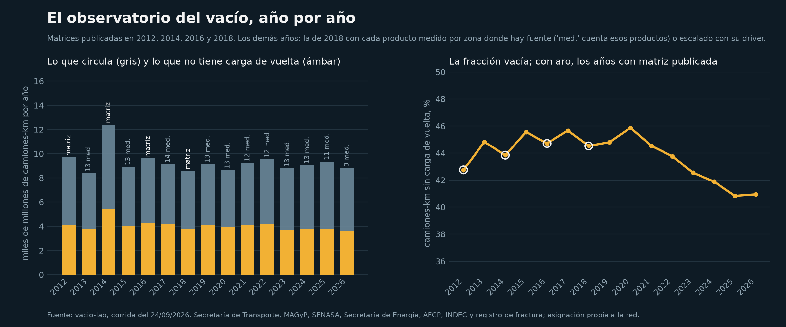
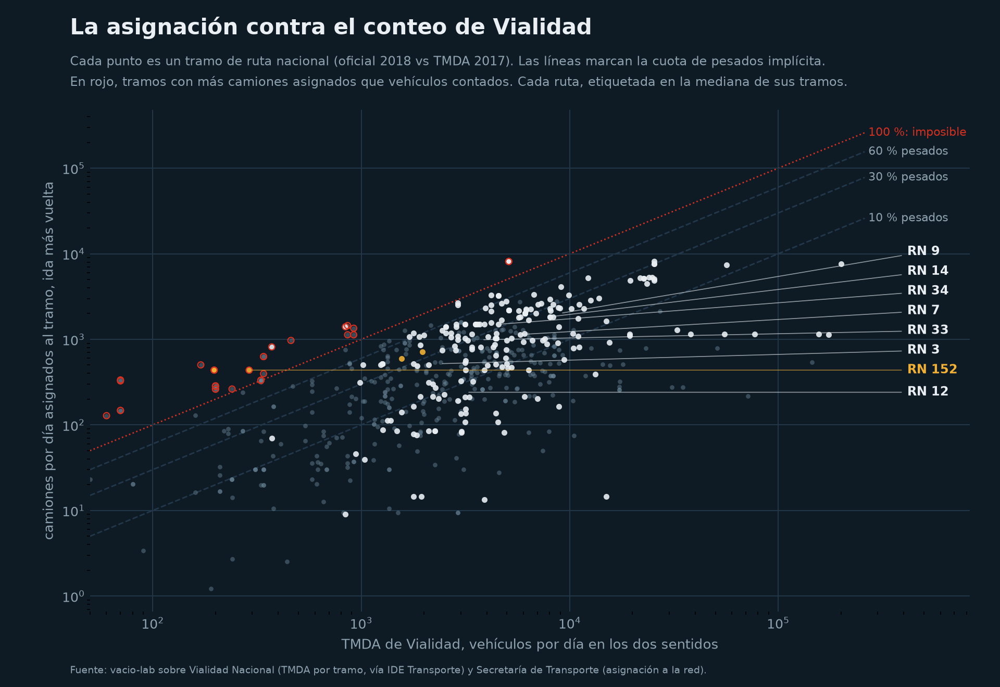

El observatorio del vacío
Cuánto del transporte automotor de cargas argentino circula en un sentido sin carga de vuelta, año por año, tramo por tramo. Corrida del 24/09/2026.
La serie

| año | base | camiones-km (1e9) | vacíos (1e9) | % sin vuelta | medidos | escenario | planos |
|---|---|---|---|---|---|---|---|
| 2012 | matriz publicada | 9,70 | 4,15 | 42,7 | 91 | 0 | 0 |
| 2013 | 2018 graduada | 8,38 | 3,75 | 44,8 | 13 | 39 | 60 |
| 2014 | matriz publicada | 12,41 | 5,44 | 43,8 | 107 | 0 | 0 |
| 2015 | 2018 graduada | 8,92 | 4,06 | 45,6 | 13 | 39 | 60 |
| 2016 | matriz publicada | 9,61 | 4,30 | 44,7 | 114 | 0 | 0 |
| 2017 | 2018 graduada | 9,14 | 4,17 | 45,7 | 14 | 38 | 60 |
| 2018 | matriz publicada | 8,58 | 3,82 | 44,5 | 112 | 0 | 0 |
| 2019 | 2018 graduada | 9,13 | 4,09 | 44,8 | 13 | 38 | 61 |
| 2020 | 2018 graduada | 8,61 | 3,95 | 45,9 | 13 | 38 | 61 |
| 2021 | 2018 graduada | 9,23 | 4,11 | 44,5 | 12 | 39 | 61 |
| 2022 | 2018 graduada | 9,56 | 4,19 | 43,8 | 12 | 39 | 61 |
| 2023 | 2018 graduada | 8,79 | 3,74 | 42,5 | 13 | 38 | 61 |
| 2024 | 2018 graduada | 9,05 | 3,79 | 41,9 | 13 | 38 | 61 |
| 2025 | 2018 graduada | 9,36 | 3,82 | 40,8 | 11 | 39 | 62 |
| 2026 | 2018 graduada | 8,79 | 3,60 | 40,9 | 3 | 47 | 62 |
Cómo leer el porcentaje: por cada 100 camiones cargados que cruzan un tramo en un sentido, ese número no tiene un camión cargado que lo cruce en el otro. Si vuelven vacíos por la misma ruta, son 3 de cada 10 kilómetros de camión, comparable con el 21,6 % de vehículo-kilómetros vacíos que mide Eurostat.
Qué se mide y qué se supone en 2025
Un producto está medido cuando una fuente abierta dice cuánto se movió en cada zona: el origen (la producción por departamento) o el destino (las ventas o el consumo por localidad o provincia). Con eso, cada zona de la matriz de 2018 se escala por su propio factor, no por uno nacional. Lo que ninguna fuente mide se escala con el driver nacional de su grupo; lo que no tiene driver queda como en 2018 y se declara.
| grupo | producto | cómo | fuente | factor 2025/2018 |
|---|---|---|---|---|
| combustibles | diesel | medido destino | Secretaría de Energía, volúmenes por estación de servicio (Res. 1104/04) | 1,16 |
| combustibles | nafta | medido destino | Secretaría de Energía, volúmenes por estación de servicio (Res. 1104/04) | 1,24 |
| mineria arena de fractura | arena de fractura no vista | medido destino | registro de fractura | – |
| granos | arroz | medido origen | MAGyP, estimaciones agrícolas por departamento | 1,84 |
| granos | cebada | medido origen | MAGyP, estimaciones agrícolas por departamento | 1,36 |
| granos | girasol | medido origen | MAGyP, estimaciones agrícolas por departamento | 1,45 |
| granos | maiz | medido origen | MAGyP, estimaciones agrícolas por departamento | 1,31 |
| granos | soja | medido origen | MAGyP, estimaciones agrícolas por departamento | 1,42 |
| granos | sorgo | medido origen | MAGyP, estimaciones agrícolas por departamento | 2,47 |
| granos | trigo | medido origen | MAGyP, estimaciones agrícolas por departamento | 1,12 |
| regionales | algodon | medido origen | MAGyP, estimaciones agrícolas por departamento | 1,11 |
Con driver nacional, 39 productos:
| driver | productos |
|---|---|
| driver ipi | 9 |
| driver isac | 7 |
| driver gasoil | 3 |
| driver soja | 3 |
| driver trigo | 2 |
| driver automotriz | 2 |
| driver cemento | 2 |
| driver arena_t | 1 |
| driver azucar | 1 |
| driver limon | 1 |
| driver mandarina | 1 |
| driver maiz | 1 |
| driver nafta | 1 |
| driver naranja | 1 |
| driver pomelo | 1 |
| driver papas | 1 |
| driver siderurgia | 1 |
| driver yerba | 1 |
Sin dato, planos como en 2018: 62 productos, en su mayoría minerales, regionales menores e industrializados sin serie propia.
La asignación contra el conteo de Vialidad
Vialidad Nacional cuenta vehículos por tramo (TMDA, todos los vehículos, los dos sentidos). Los camiones que la asignación pone en cada tramo no pueden superar ese conteo, y la cuota que representan tiene que parecerse a la cuota de pesados de una ruta de carga. Sobre 557 tramos apareados, la asignación oficial de 2018 implica una cuota de pesados mediana del 15 %, con una correlación de rangos de 0,59 con el conteo y 33 tramos imposibles (más camiones asignados que vehículos contados).

| ruta | tramos | cuota de pesados mediana, % | q25 | q75 | Spearman | imposibles |
|---|---|---|---|---|---|---|
| RN 40 | 72 | 10 | 4 | 44 | -0,02 | 12 |
| RN 9 | 46 | 19 | 5 | 30 | 0,86 | 1 |
| RN 3 | 40 | 20 | 6 | 41 | 0,41 | 1 |
| RN 12 | 29 | 9 | 6 | 14 | 0,77 | 0 |
| RN 34 | 26 | 41 | 23 | 56 | 0,27 | 0 |
| RN 38 | 25 | 11 | 6 | 14 | 0,34 | 0 |
| RN 14 | 24 | 30 | 23 | 41 | 0,85 | 0 |
| RN 7 | 24 | 20 | 5 | 31 | 0,22 | 0 |
| RN 33 | 19 | 34 | 22 | 43 | 0,86 | 2 |
| RN 8 | 19 | 7 | 5 | 11 | -0,06 | 0 |
| RN 188 | 15 | 25 | 15 | 32 | 0,76 | 0 |
| RN 226 | 15 | 18 | 10 | 26 | 0,12 | 0 |
Vialidad publica el TMDA sin composición por categoría; la cuota de pesados sale de dividir camiones asignados por vehículos contados y es una verificación de orden de magnitud, no una calibración.
Descargas
- observatorio_tramos.csv: camiones por tramo, sentido y año, con el vacío (id, ab, ba, total, km, etiqueta de ruta, vacío por día y en km).
- observatorio_estado.csv: por año y producto, si es medido, escenario o plano, con la fuente y el factor.
- observatorio_resumen.csv: la serie nacional.
- validacion_tmda.csv y validacion_tmda_rutas.csv: la comparación con Vialidad por tramo y por ruta.
- estaciones_conteo_2019.csv: las estaciones de conteo de Vialidad sobre las rutas de referencia.
Cómo se arma y qué le falta
- Base: las matrices origen-destino de la Secretaría de Transporte (123 zonas, 113 productos) de 2012, 2014, 2016, 2018, asignadas a la red simplificada de 1.731 tramos por caminos mínimos.
- Fuentes que miden por zona: producción agrícola por departamento (MAGyP), movimientos de hacienda entre departamentos (SENASA, 2013 a 2018), volúmenes por estación de servicio (Secretaría de Energía), consumo de cemento por provincia (AFCP, desde 2021) y arena bombeada (registro de fractura).
- Pedidos en curso: la matriz 2022 del CESPA, los viajes de granos de la Carta de Porte Electrónica y las encuestas en ruta de la Secretaría (ver
PEDIDOS.md). - Lo que nadie mide: el camión vacío real. El panel de flotas propone una semana de viajes por vehículo, como la encuesta continua del Reino Unido.
- Se corre solo una vez por mes (GitHub Actions) y cada corrida reemplaza esta página y los CSV.